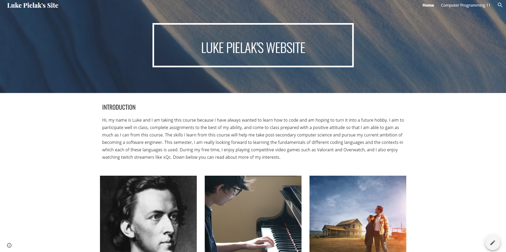
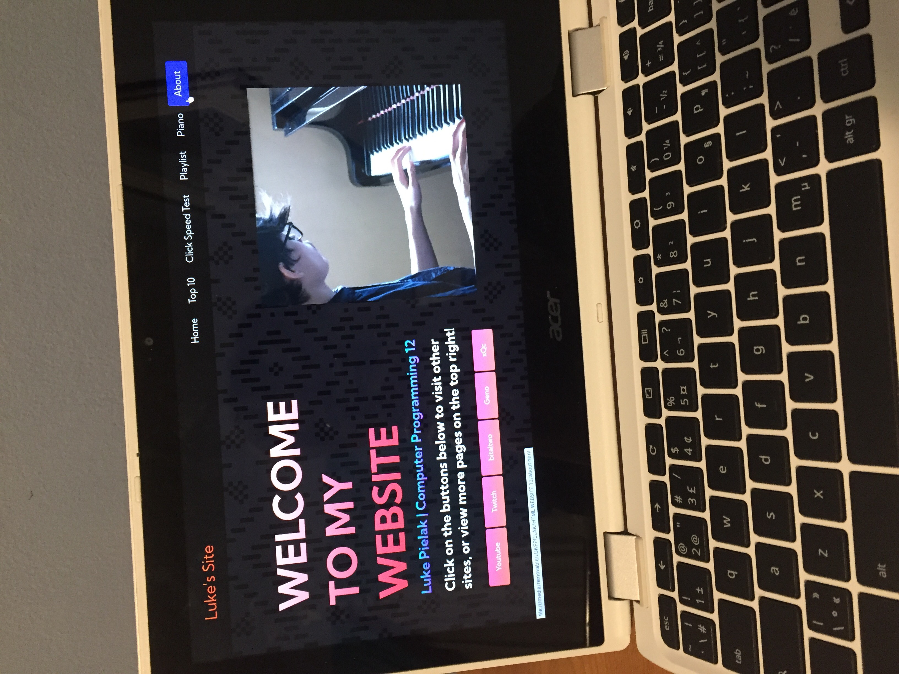
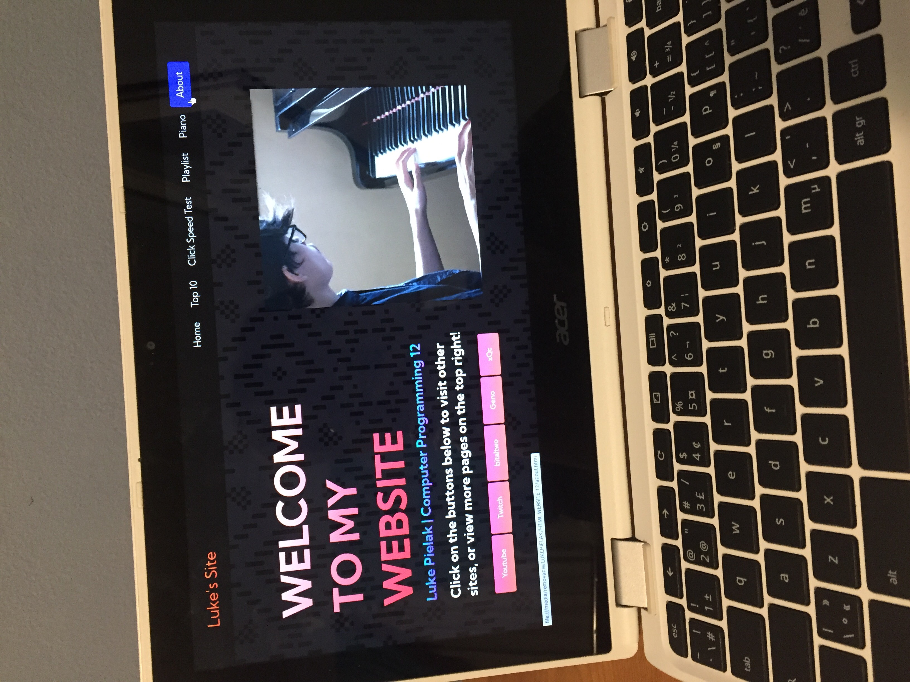

Click on the button below to visit my Google site!
This site details information regarding my interests as well as blog posts about what I have learned so far in Programming 11 and 12.
Further below is a blog post from my website; visit my site to see more!

HTML & CSS Reflection
In Computer Programming 12, I made revisions and new pages to the website I designed the previous year. Seeing my website take shape after hours of work was definitely very rewarding and enjoyable; however, that is not to say the experience was free of any obstacles. Most of the difficulties I faced had to do with conceptualizing and coding the layout of my site. It took some time for me to determine the perfect margins for each on my page so that all of the elements fit exactly as I imagined them. Additionally, I would often spend long periods of time trying to figure out what was causing an error in my code, searching through google and looking up tutorials, only to discover that I was missing a semi-colon in my CSS or a quotation mark in my HTML. These types of errors, fortunately, became easier to recognize with time. Furthermore, unlike last year, in grade 12 I decided to transfer my website to my Chromebook and use Caret to write my code. There was a slight learning curve that came with this decision, but I believe it was a worthwhile change as it greatly improved my efficiency. As for the future of my website, the general direction I have is for it to be more interactive and engaging. I want my site to be more enjoyable to use rather than informative. A key component in making a website more interactive is javascript, so I plan to learn more about how to use this tool in order to integrate unique functionality and fun games onto my site. Something that was confusing to me at first was positioning blocks beside each other on my site, however, once I understood how to manipulate the positioning of these elements with margins, padding, and float it became a lot more intuitive for me. Something that I have always found to be easier was using CSS to apply different styles to elements in my HTML. I never ran into any issues with this, and I could immediately see the result as soon as I refreshed, so it was easy for me to adjust accordingly based on what my intentions were. Overall, designing a website comes with its own ups and downs but is overall a very rewarding and educational experience. I am grateful for all the skills I learned in coding with CSS and HTML and will be sure to apply these skills in the future if I ever need or desire to make a website on my own time.
 
